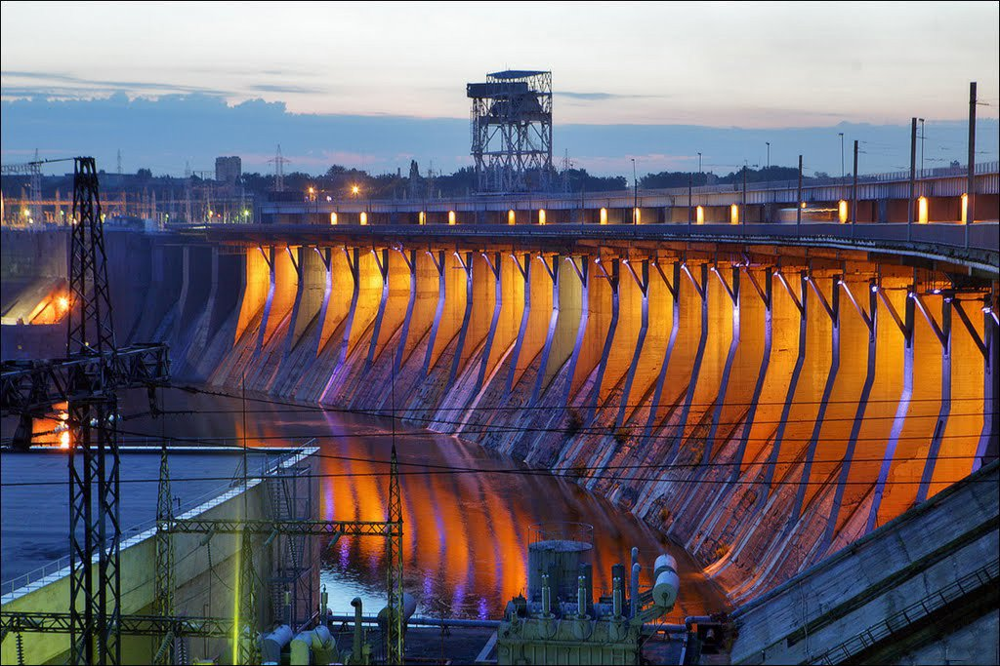
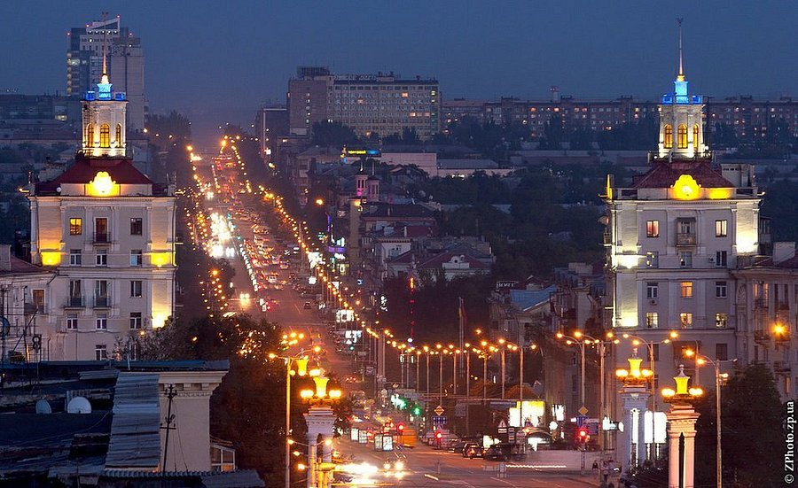
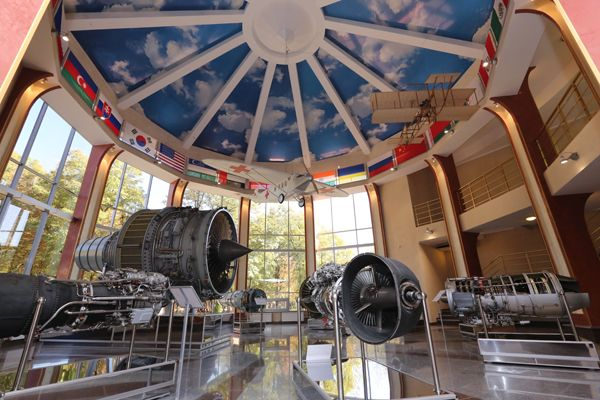
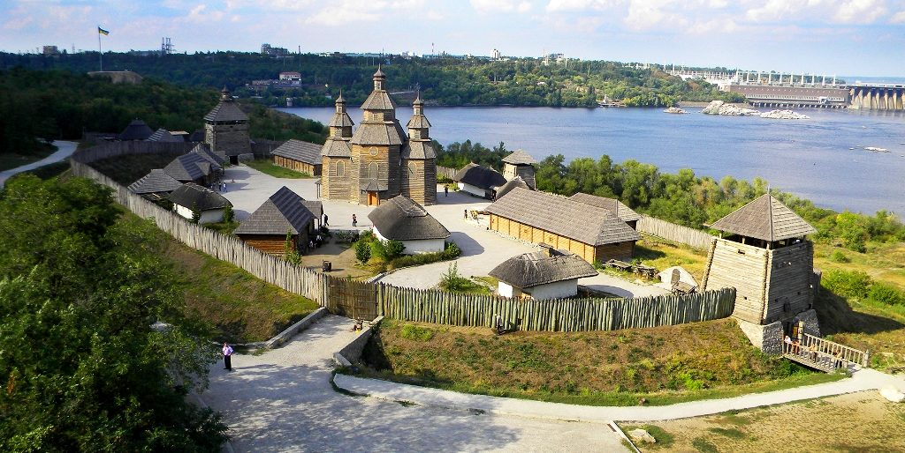
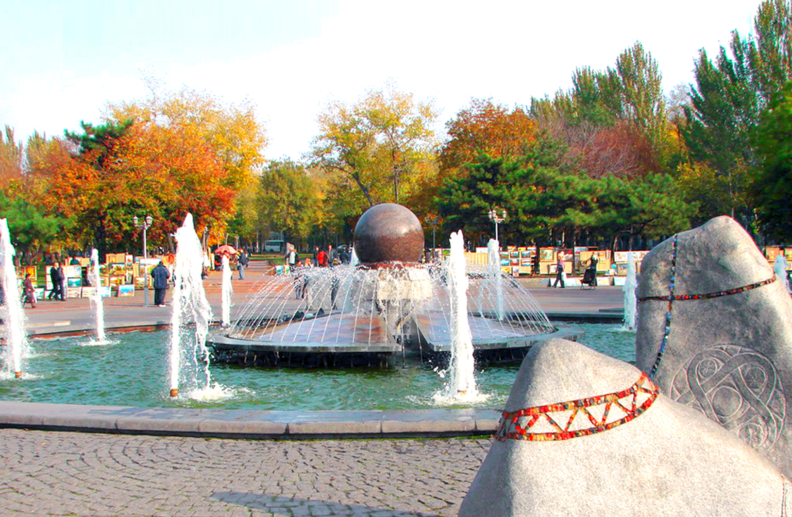
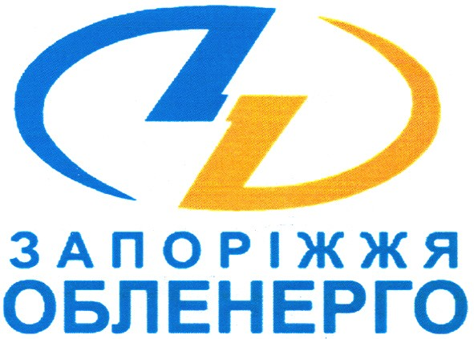
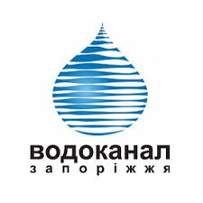
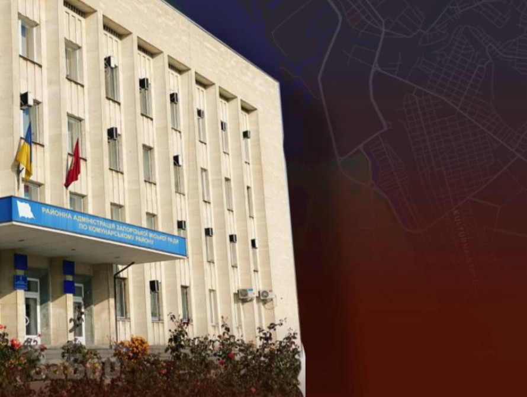
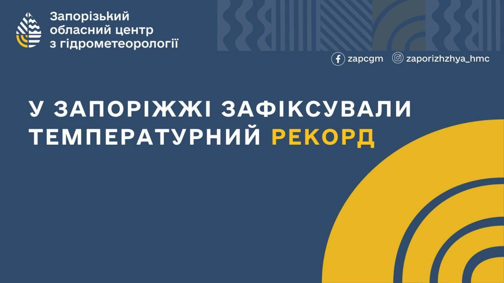

Організоторам
Експонентам
Відвідувачам
Журналістам

ДніпроГЕС
Найстаріша та одна з найбільших ГЕС України у Запоріжжі. Запущена у 1932 році, стала важливим елементом індустріалізації та формування Дніпровського каскаду. Має масивну греблю і відіграла значну роль в історії та розвитку регіону.

Проспект Соборний
Головна магістраль Запоріжжя довжиною понад 10 км, що з’єднує вокзал і ДніпроГЕС. Поєднує історичну забудову, конструктивізм «Соцміста» та проходить через чотири райони міста.

Арковий міст
Міст, в основі конструкції якого лежить арка, що працює на стиск. Такі мости будують зі сталі чи залізобетону. В Україні відомі арковий міст на Хортицю та Мерефо-Херсонський міст у Дніпрі.

Музей техніки Богуслаєва
Колекція авіадвигунів, мотоциклів, зброї та самоварів, що розповідає про історію заводу й авіації. Нині музей тимчасово не працює через арешти майна та слідчі дії.

Хортиця
Найбільший річковий острів Європи та природно-історичний заповідник. Відомий своєю природою, ландшафтами та комплексом «Запорозька Січ».

«Майдан Метців»
Скульптурна композиція з гранітною кулею, що обертається від потоку води. Створена Петром Антипом і символізує ключові етапи історії українського народу.


Новини

Синоптики 18 листопада зареєстрували аномально високу температуру повітря

У Запорізькій області зареєстрували понад 2,4 тис. випадків ГРВІ, більш ніж половина хворих – діти
У Запорізькій області на тлі похолодання збільшується кількість випадків гострих респіраторних інфекцій, грипу та коронавірусу.